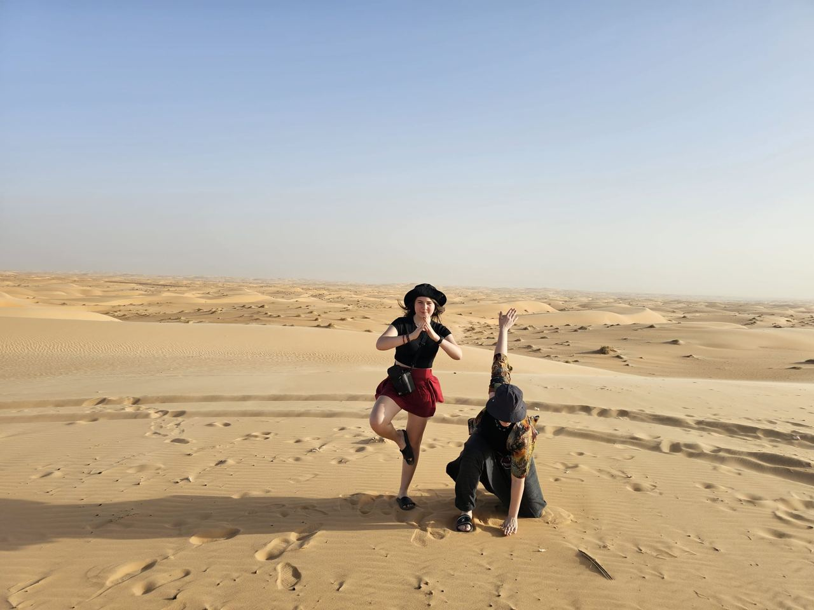
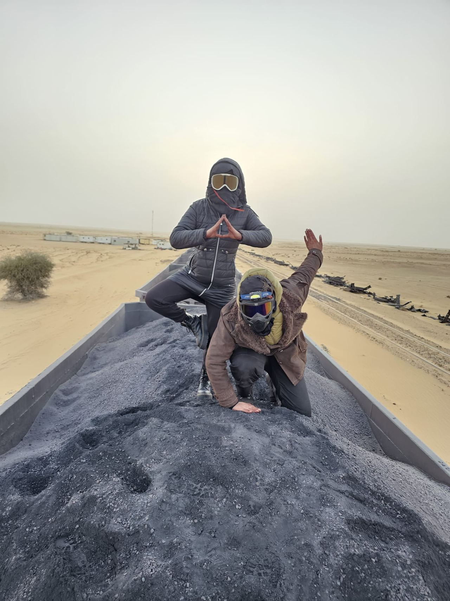
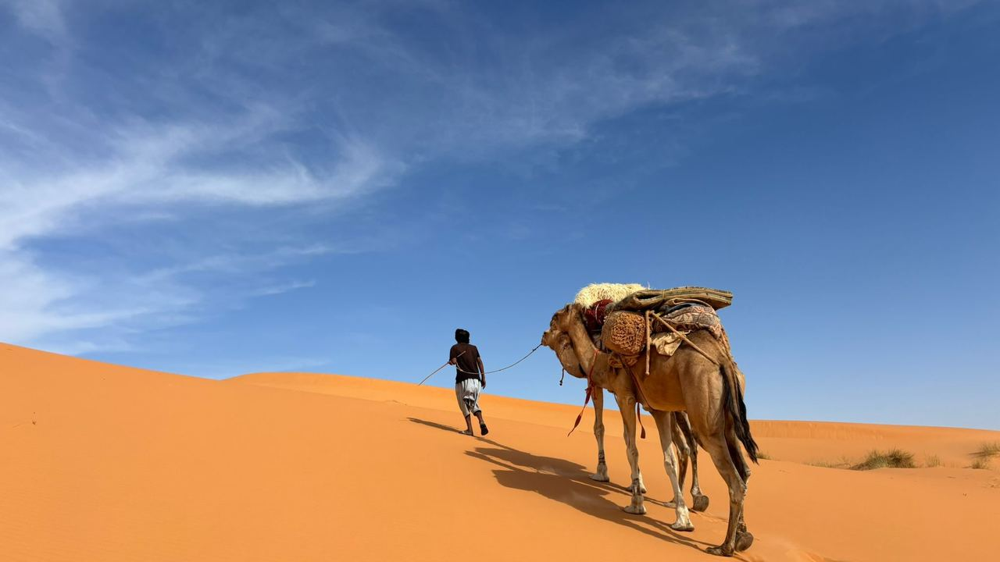
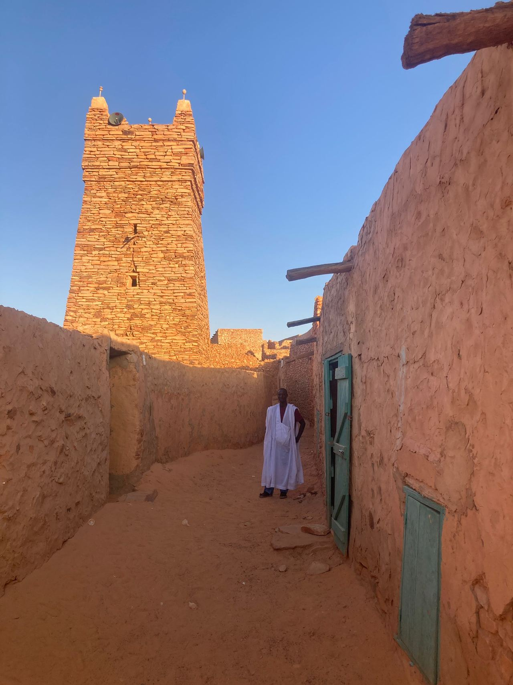
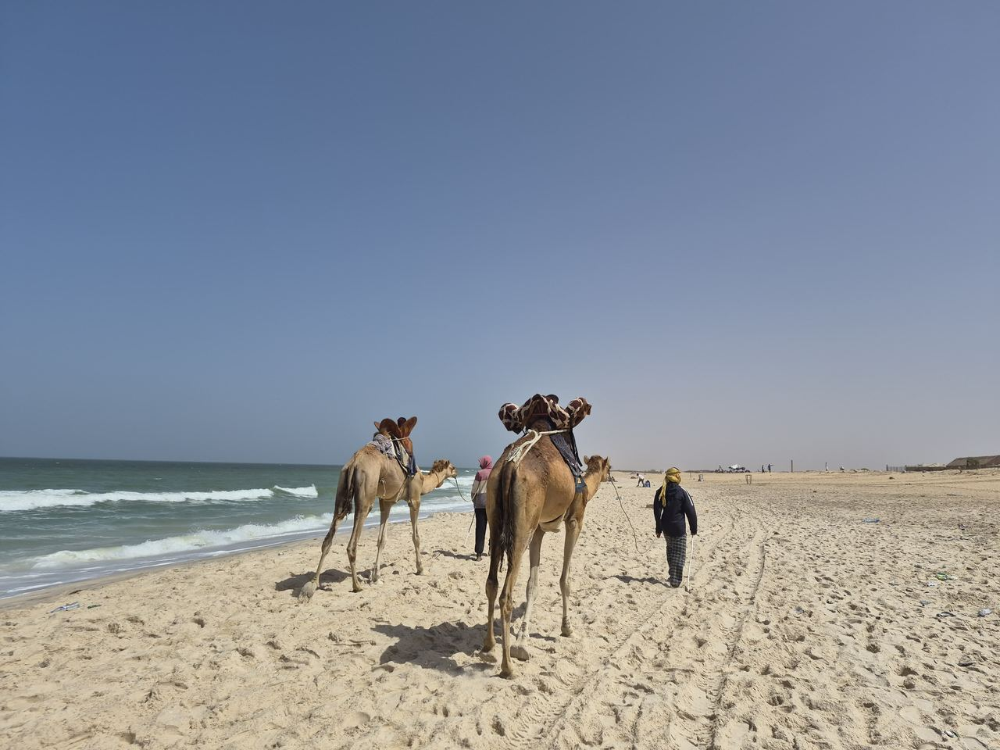

Fotografie
Galleria
Ogni fotografia di questo sito è stata scattata durante uno dei nostri viaggi, dalle nostre guide e dai viaggiatori che sono venuti con noi.

01
Il treno del ferro
Dodici ore su un vagone aperto, dalle miniere di Zouérat all’Atlantico.

02
Traversate del deserto
Erg, bivacchi, carovane e il silenzio che si attraversa un continente per ascoltare.

03
Cultura
Città di pietra, biblioteche familiari, pasti condivisi e otto secoli di ospitalità.

04
Paesaggi
Canyon, oasi, banchi di sabbia e il punto in cui il Sahara cade nell’oceano.
05
Viaggiatori
Le persone che sono venute con noi, e ciò che questo Paese ha fatto loro.